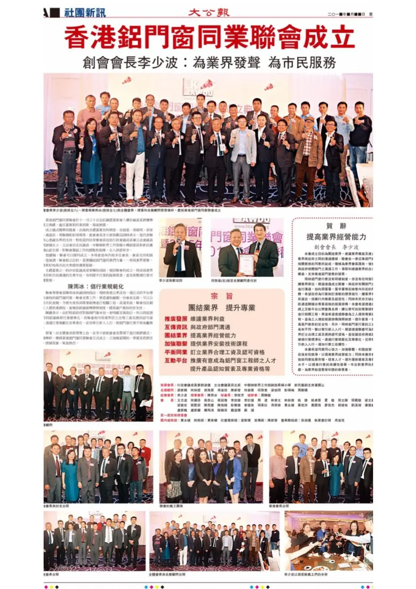

About HKAWDA
Founded on 30 November 2015 by people working in the aluminium window and door trade, HKAWDA is a bridge between the industry, government and the public.
A voice for the trade, a service to the public
Before HKAWDA, there was no formal place for the public to find qualified aluminium window firms. Our first task was a public member register so residents could find professionals for their work.
Longer term, we aim to provide professional courses for workers, push for a licensing system for window fitters, and urge government to set clear standards for window installation and repair, making installation and removal safer.
We also encourage healthy competition, help members grow their markets and train new talent for the long-term health of the trade.

LE-RELAX
HKAWDA was set up in 2015 on the initiative of LE-RELAX, together with fellow firms, for the whole aluminium window and door trade. Founded in Hong Kong in 1986, LE-RELAX manufactures and wholesales aluminium windows and doors, shower screens and glass from its own factory in Zhongshan, handling glass processing, hinges and final assembly in-house, and is on the Housing Authority's approved supplier list.
LE-RELAX supplies only and never installs. Its customers are contractors and fitters, including many HKAWDA members. Homeowners can ask their member contractor to specify its products.

Uniting the trade, raising standards
Protect the interests of the trade
Liaise with government departments
Strengthen members' businesses
Provide installation skills courses
Set fair wages and recognised qualifications
Bring new talent into the trade and raise product knowledge and professional standards
Our track record
Raised form-processing times with the Buildings Department, which agreed to improve and redeploy staff.
Invited by TVB to explain the trade's concerns; the Buildings Department then introduced a window-inspection card for qualified professionals.
Secured VTC agreement to run window-inspection courses, and runs industry courses with IVE.
When members faced prosecution over licensing, the Association's legal adviser assisted and gave advice.
Organised visits to extrusion, glass and window factories so members understand production.
Our people
Council members
- 王志達
- 張文輝
- 葉效洪
- 林榮文
- 姚卓恩
- 廖俊杰
- 劉建枝
- 劉溪湖
- 龐道穗
- 周淩
- 夏敏
- 陳海錫
- 賴飛鴻
- 何鎮添
- 彭聲雄
- 葛國海
- 謝錦添
- 吳杏山
- 梁文超
- 曾德魚
- 盧家幟
- 吳冠偉
- 林劍偉
- 郭賢招
- 盧家鎌
- 姚雄
- 梁賀宏
- 李計德
- 陳西慶
- 黃永健
- 潘偉能
- 蘇捷
First Standing Committee
| DEPARTMENT | IN CHARGE |
|---|---|
| Mainland Affairs | 黃永健先生 |
| Finance | 林瀛杰先生 |
| Member Liaison | 鄭凱程小姐、劉家麗小姐 |
Affiliated association of the Kowloon Chamber of Commerce
HKAWDA is recognised by the Kowloon Chamber of Commerce as an affiliated association.